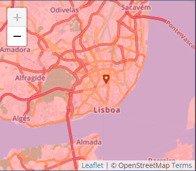
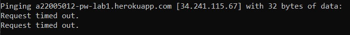
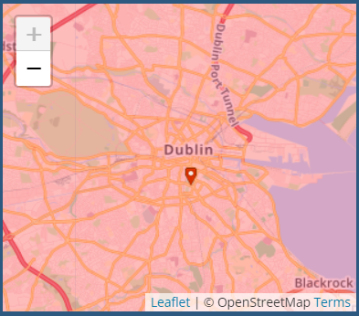
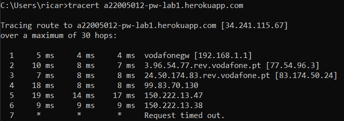
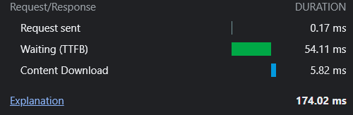
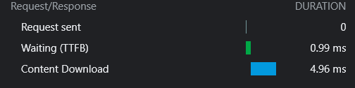

De acordo com o google o meu endereço ip do laptop é: 2001:818:e925:b800:35b4:5080:ce2:3323. Portanto trata-se de um endereço IPV6
Como o website para obter os adereços não conseguia encontrar a minha pagina utilizei o comando ping
depois utilizei o ip devolvido pela consola no website
ao fazer o comando tracert que me indica o caminho que os pacotes fazem, e por que ips passam obti o ip: 150.222.13.38 ao colocar esse ip no website a localização geográfica também se encontra em Dublin como o anterior
O protocolo HTTP permite através de vários metodos estabelecer uma comunicação entre servidor e utilizador, o metodo GET faz com que o servidor envie conteudos e/ou ficheiros html. O metodo POST faz com o utilizador mande informação ao servidor, como por exemplo search boxes ex(youtube) ou outros formularios. Utilizar o shortcut Ctrl+U permite ter uma expanded view do source code da pagina, em comparação com o inspect
Atravez da imagem dá para perceber que ao navegar para o meu site ocorrem 2 requests, foram transferidos 47.8kb de resources e que o documento foi loaded em 1.01s. É exibido um linha temporal de quais os recursos é que forma carregados primeiro, neste caso o documento html foi o primeiro a ser carregado e a image a seguir Neste caso foram descarregados 2 ficheiros, mas de acordo com a pagina podem ser muitos mais, ao abrir o youtube são carregados todas as imagens das thumbnails dos videos timing do documento html:
timing da imagem:
Os headers mostram metadados, como a ultima data de modificação, tamanho e tipo de ficheiro. A preview mosta o elemento isolado dos outros O timing mostra o tempo que demorou a ser feito o request. O tempo que se ficou à espera para que seja enviado o 1ºbyte e o tempo que o conteudo demorou a ser transferido